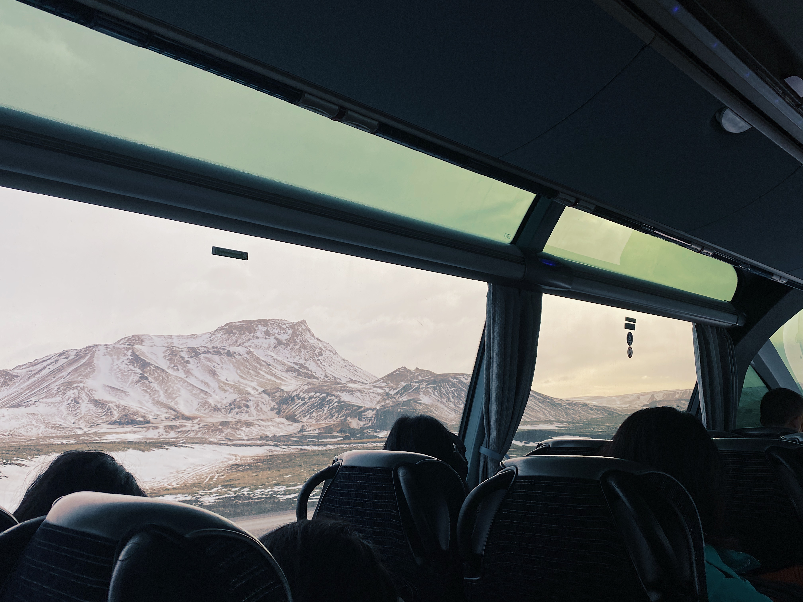
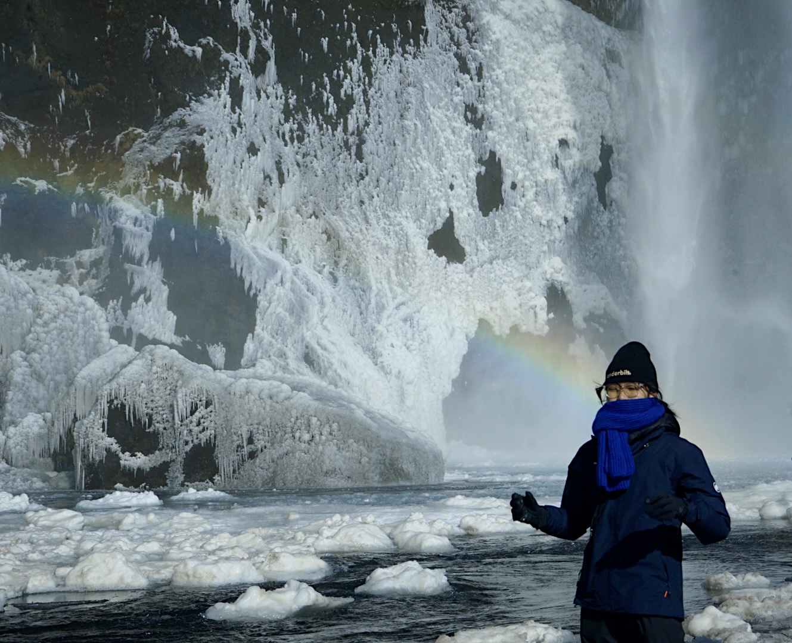
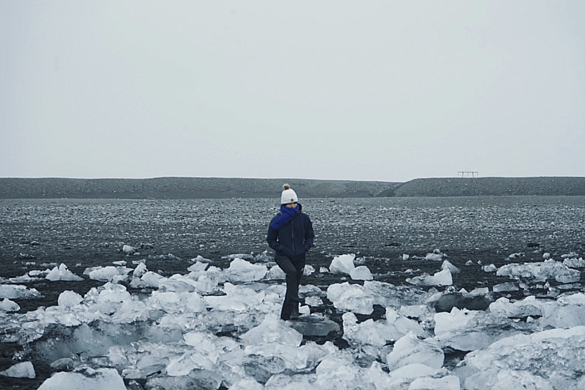
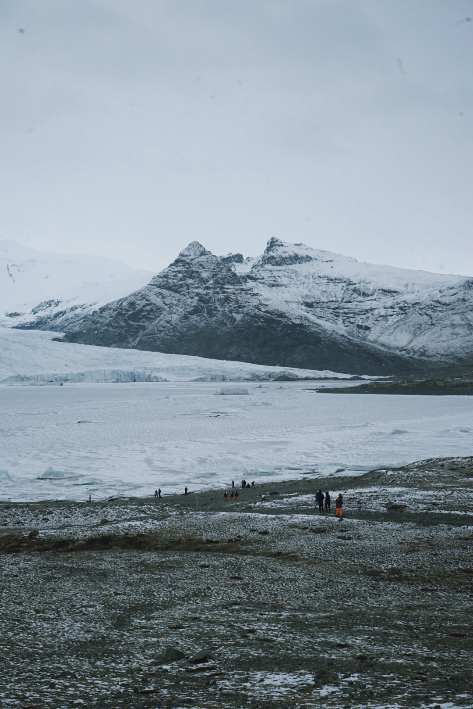
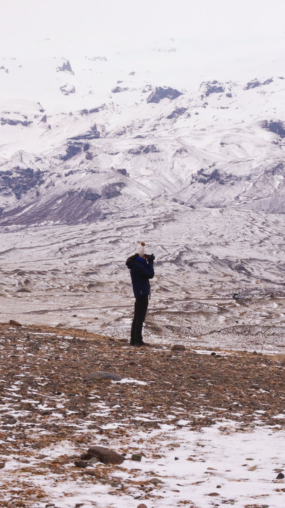
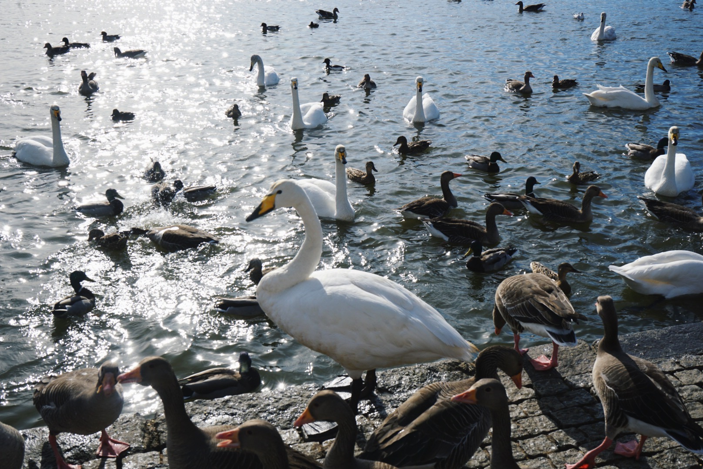
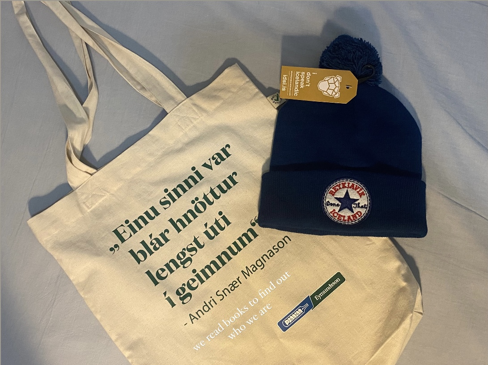

冰瀑與瞬時彩虹
奔湧的水流在嚴寒中凝結成巨大的冰晶帷幕，在最凜冽的冷冽之中，陽光折射出一道近乎奇蹟的彩虹。身著深藍色裝束佇立在其面前，體會生命在宏大自然前的渺小與安靜。
橫跨荒涼的火山苔原與靜謐的晶瑩海岸，這不只是一場地理位移，而是一次將感官完全剝離、重新歸零的內省之旅。在這裡，時間被凍結，光影被拉長。

坐在駛向荒野的巴士上，天頂延伸的玻璃隔開了零下的寒風，卻關不住步步逼近的白色巨獸。窗外連綿的雪山與火山灰交織成沒有終點的畫卷，那一刻，我們正式被這座島嶼接納。

奔湧的水流在嚴寒中凝結成巨大的冰晶帷幕，在最凜冽的冷冽之中，陽光折射出一道近乎奇蹟的彩虹。身著深藍色裝束佇立在其面前，體會生命在宏大自然前的渺小與安靜。

擱淺在黑色晶體沙灘上的冰塊，宛如散落一地的永恆靜物。每一步行走，都是在跨越由上萬年歷史凝聚而成的水晶矩陣。

遠處巨大的白藍色冰川山脈綿延，人群在浩瀚的冰原邊緣縮小成微不足道的黑點。冷冽的空氣裡只有冰層細微碎裂的嘆息聲。
拿起相機，將焦點對準那片近乎不真實的雪白山脊。攝影在冰島變成了一種本能——試圖用有限的矩形邊框，去捕捉無限延展的靜謐孤獨。


雷克雅維克湖畔耀眼的冬日暖陽，與成群天鵝激起粼粼波光。

“Einu sinni var blár hnöttur...”
帶著安德里·斯奈·馬格納森的詩意帆布袋與雷克雅維克針織帽，將這座島嶼的文本隨身攜帶。